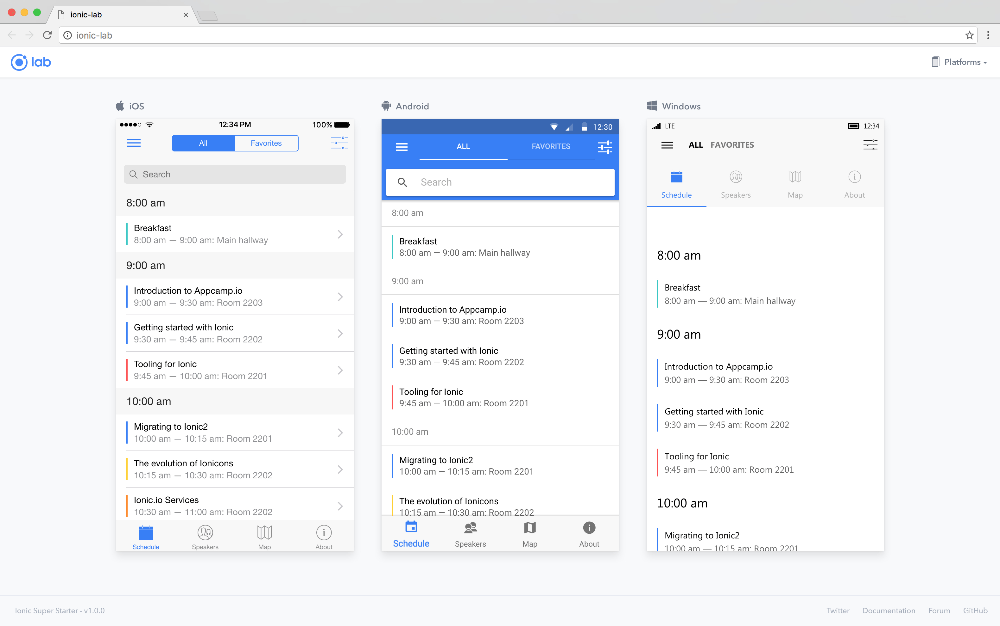

What is Ionic?
Ionic is a free and open source framework for building mobile apps.
Enables developers to build cross platform apps using HTML / CSS / JS (Angular)Why Use Ionic
- Maintaining separate codebases for iOS/Android/Web is expensive
- There are more web developers then native
- Native mobile apps are large and use expensive mobile data
- It is easy to learn and development is fast
History
- v1 - 2013: built on AngularJS
- v2 - 2017: much improved Angular 2 + Typescript
- v4 - 2018: web components, framework agnostic
Stats
- 4 Million Apps Built
- 32,500 GitHub Stars
- 30,000 S.O. Questions
- 100+ Meetup Groups
Web and Mobile
Ionic uses Cordova or Phonegap to deploy natively, or runs in the browser as a Progressive Web App (PWA)
Many believe PWAs will take up market share as app stores are saturated, and benefit developing nations via it's smaller footprint and data usage, and linkabilityPlatform Continuity (iOS / MD / Windows)
Components
- Cross-Platform Building Blocks
- Great looking UI and match native design
- Inputs, Modals, Buttons, Cards, Lists, Icons...
Ionic CLI
- Scaffold App
- Starter Templates (Tabs / SideMenu / Blank)
- Generate Pages / Components / Providers
- Live Reload Server
- Bundle and Deploy
Tools
- Ionic Lab (Live Preview in browser)
- Ionic DevApp (Live reload - Preview on Device)
- Ionic Creator
Ionic Native
- use Ionic Native to access device's native layer
- Camera, Files, Contacts, Fingerprint
- Ionic Native
Plays Well With Others
- Integrate with custom backend
- Or go serverless with Firebase / Azure BaaS
- Use any Angular / Web libraries you like
Performance
- Generally 60 fps, hardware optimized
- Suitable for 90% of apps
- Supports Lazy Loading
- Updated often to improve performance
Ionic v4 should be another significant leap in performance and startup time